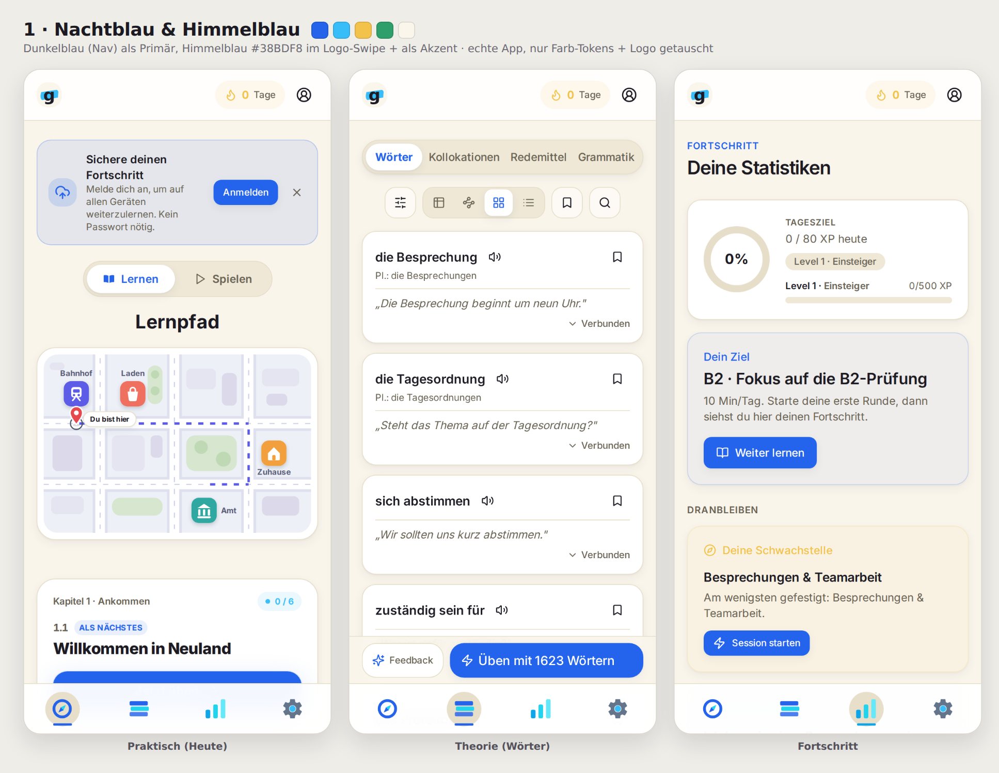
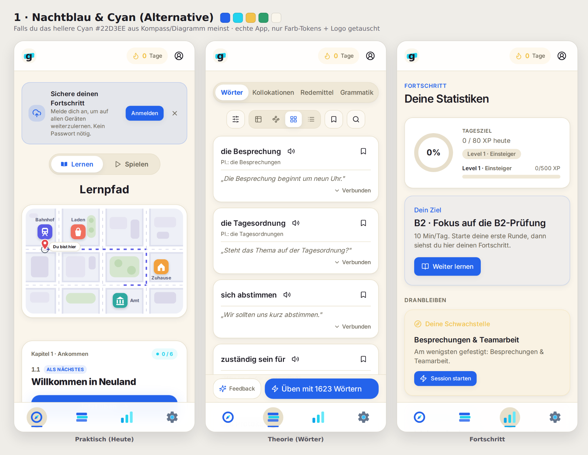
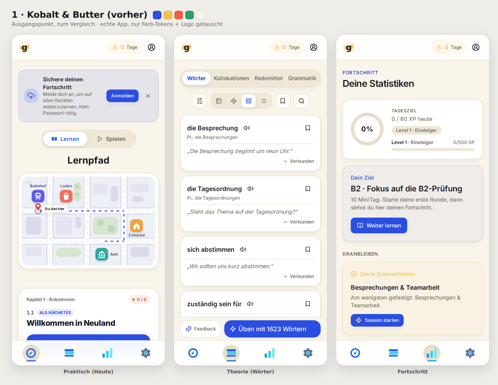

<!-- Genauly Markenkatalog Vol. VII — Kit 1 mit Nav-Blau. -->
<meta charset="utf-8"><meta name="viewport" content="width=device-width, initial-scale=1">
<title>Genauly · Kit 1 mit Nav-Blau</title>
<link rel="preconnect" href="https://fonts.googleapis.com"><link rel="preconnect" href="https://fonts.gstatic.com" crossorigin>
<link rel="stylesheet" href="https://fonts.googleapis.com/css2?family=Fraunces:opsz,wght@9..144,400;9..144,500;9..144,600&family=Inter:wght@400;500;600;700;800&display=swap">
<style>
  :root{ --page:#F3F0E9; --ink:#1C1A20; --mut:#6C6A72; --line:#E1DCCF; --card:#FBF9F4; --ui:"Inter",system-ui,sans-serif; --disp:"Fraunces",Georgia,serif; }
  @media (prefers-color-scheme:dark){ :root{ --page:#131218; --ink:#ECEAF2; --mut:#9997A6; --line:#2A2836; --card:#1A1922; } }
  :root[data-theme="light"]{ --page:#F3F0E9; --ink:#1C1A20; --mut:#6C6A72; --line:#E1DCCF; --card:#FBF9F4; }
  :root[data-theme="dark"]{ --page:#131218; --ink:#ECEAF2; --mut:#9997A6; --line:#2A2836; --card:#1A1922; }
  *{ box-sizing:border-box; margin:0; padding:0; } html{ scroll-behavior:smooth; }
  body{ background:var(--page); color:var(--ink); font-family:var(--ui); line-height:1.55; }
  .wrap{ max-width:1120px; margin:0 auto; padding:0 26px; }
  .intro{ padding:70px 0 34px; }
  .intro .eyebrow{ font-size:12px; font-weight:700; letter-spacing:.16em; text-transform:uppercase; color:var(--mut); }
  .intro h1{ font-family:var(--disp); font-size:clamp(30px,5vw,46px); font-weight:500; letter-spacing:-.01em; margin:14px 0 16px; text-wrap:balance; line-height:1.1; }
  .intro p{ max-width:66ch; font-size:16px; opacity:.84; } .intro p + p{ margin-top:10px; }
  .change{ display:flex; flex-wrap:wrap; gap:14px; margin-top:22px; }
  .chg{ display:flex; align-items:center; gap:11px; background:var(--card); border:1.5px solid var(--line); border-radius:14px; padding:11px 15px; font-size:13.5px; font-weight:600; }
  .chg .sw{ width:22px; height:22px; border-radius:6px; border:1px solid rgba(128,128,128,.3); flex:none; }
  .chg .arw{ opacity:.5; }
  main{ padding:14px 0 20px; }
  .kit{ background:var(--card); border:1.5px solid var(--line); border-radius:22px; padding:24px; margin-bottom:22px; }
  .kithead{ display:flex; align-items:center; gap:16px; margin-bottom:16px; }
  .kithead .mk{ width:58px; height:58px; border-radius:15px; flex:none; box-shadow:0 4px 14px rgba(20,16,30,.14); }
  .kithead .badge{ font-size:11px; font-weight:700; letter-spacing:.12em; text-transform:uppercase; color:#2563EB; }
  .kithead h3{ font-family:var(--disp); font-size:23px; font-weight:600; margin:2px 0 3px; }
  .kithead .tag{ font-size:13.5px; opacity:.72; max-width:70ch; }
  .pal{ display:flex; flex-wrap:wrap; gap:10px; margin-bottom:20px; }
  .sw{ display:flex; align-items:center; gap:8px; } .sw .chip{ width:26px; height:26px; border-radius:7px; display:block; border:1px solid rgba(128,128,128,.28); }
  .sw .hx{ font-size:11.5px; font-weight:600; opacity:.62; font-variant-numeric:tabular-nums; letter-spacing:.02em; }
  .shot img{ width:100%; height:auto; display:block; border-radius:14px; }
  .outro{ padding:26px 0 84px; } .outro h2{ font-family:var(--disp); font-size:24px; font-weight:600; margin-bottom:10px; }
  .outro p{ max-width:66ch; opacity:.84; } .outro p + p{ margin-top:10px; }
  code{ font-family:ui-monospace,Menlo,monospace; font-size:.9em; background:rgba(128,128,128,.14); padding:1px 5px; border-radius:5px; }
</style>
<header class="intro"><div class="wrap">
  <p class="eyebrow">Genauly · Kit 1 · Anpassung</p>
  <h1>Kit 1 im Blau der Navigationsleiste</h1>
  <p>Deine Anpassung: das <b>Kobalt</b> weicht dem <b>Dunkelblau der unteren Navigation</b> (<code>#2563EB</code>, die Farbe von Kompass und Theorie-Balken), und das <b>Hellblau der Leiste</b> kommt neu in die Palette und ersetzt das Buttergelb im Logo-Swipe.</p>
  <p>Weil in der Leiste zwei Hellblau-Töne stecken, siehst du beide: das <b>Himmelblau</b> (Empfehlung) und das hellere <b>Cyan</b> als Alternative. Alles ist die echte App, nur Farb-Tokens + Logo getauscht.</p>
  <div class="change">
    <div class="chg"><span class="sw" style="background:#2B4FE0"></span>Kobalt<span class="arw">→</span><span class="sw" style="background:#2563EB"></span>Nav-Dunkelblau</div>
    <div class="chg"><span class="sw" style="background:#F3C24B"></span>Butter im Logo<span class="arw">→</span><span class="sw" style="background:#38BDF8"></span>Nav-Hellblau</div>
    <div class="chg"><span class="sw" style="background:#38BDF8"></span>Hellblau neu in der Palette</div>
  </div>
</div></header>
<main><div class="wrap"><article class="kit">
    <div class="kithead">
      <div><span class="badge">Empfehlung</span><h3>1 · Nachtblau & Himmelblau</h3><p class="tag">„Light blue" als Himmelblau gelesen (#38BDF8, u.a. der helle Punkt im Zahnrad). Liest sich eindeutig als Hellblau und ergibt mit dem Dunkelblau ein sauberes Zwei-Blau-System.</p></div></div>
    <div class="pal"><div class="sw"><span class="chip" style="background:#2563EB"></span><span class="hx">#2563EB</span></div><div class="sw"><span class="chip" style="background:#38BDF8"></span><span class="hx">#38BDF8</span></div><div class="sw"><span class="chip" style="background:#F3C24B"></span><span class="hx">#F3C24B</span></div><div class="sw"><span class="chip" style="background:#2E9E6B"></span><span class="hx">#2E9E6B</span></div><div class="sw"><span class="chip" style="background:#FAF6EC"></span><span class="hx">#FAF6EC</span></div></div>
    <div class="shot"></div>
  </article>
<article class="kit">
    <div class="kithead">
      <div><span class="badge">Alternative</span><h3>1 · Nachtblau & Cyan (Alternative)</h3><p class="tag">Falls du das hellere Cyan meinst (#22D3EE, die Kompassnadel und der helle Diagramm-Balken). Frischer, aber kippt Richtung Türkis.</p></div></div>
    <div class="pal"><div class="sw"><span class="chip" style="background:#2563EB"></span><span class="hx">#2563EB</span></div><div class="sw"><span class="chip" style="background:#22D3EE"></span><span class="hx">#22D3EE</span></div><div class="sw"><span class="chip" style="background:#F3C24B"></span><span class="hx">#F3C24B</span></div><div class="sw"><span class="chip" style="background:#2E9E6B"></span><span class="hx">#2E9E6B</span></div><div class="sw"><span class="chip" style="background:#FAF6EC"></span><span class="hx">#FAF6EC</span></div></div>
    <div class="shot"></div>
  </article>
<article class="kit">
    <div class="kithead">
      <div><span class="badge">Vorher</span><h3>1 · Kobalt & Butter (vorher)</h3><p class="tag">Kobalt-Primär und Butter-Swipe, zum direkten Vergleich.</p></div></div>
    <div class="pal"><div class="sw"><span class="chip" style="background:#2B4FE0"></span><span class="hx">#2B4FE0</span></div><div class="sw"><span class="chip" style="background:#F3C24B"></span><span class="hx">#F3C24B</span></div><div class="sw"><span class="chip" style="background:#F0603F"></span><span class="hx">#F0603F</span></div><div class="sw"><span class="chip" style="background:#2E9E6B"></span><span class="hx">#2E9E6B</span></div><div class="sw"><span class="chip" style="background:#FAF6EC"></span><span class="hx">#FAF6EC</span></div></div>
    <div class="shot"></div>
  </article></div></main>
<footer class="outro"><div class="wrap">
  <h2>Sag mir, welches Blau</h2>
  <p>Wenn das <b>Himmelblau</b> stimmt, ist die Variante fertig zum Verdrahten. Meintest du das <b>Cyan</b>, nehme ich das. Und falls das Hellblau nur ins Logo soll (nicht als App-Akzent auf Chips und Badges), sag Bescheid, dann bleibt der Rest neutral.</p>
  <p>Diese Vorschau ist derselbe Mechanismus wie der echte Umbau (die Tokens in <code>src/index.css</code>), das Ergebnis sieht also genauso aus.</p>
</div></footer>